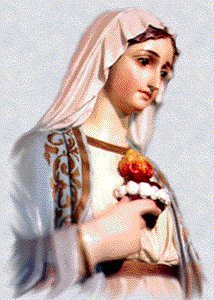

-
One day, MARY had finished the domestic occupations and
SHE rested in the
-
One day, MARY had finished the domestic occupations and
SHE rested in the room. SHE meditated in the truth of the papyruses
sacred, HER engagement with Joseph and HER unrestrained and irrepressible
love for GOD. Suddenly, an Angel of LORD appeared. MARY stayed deeply
touched and with the fright of the unexpected SHE looked him in silence.
The Angel greeted smiling:
room. SHE meditated in the truth of the papyruses
sacred, HER engagement with Joseph and HER unrestrained and irrepressible
love for GOD. Suddenly, an Angel of LORD appeared. MARY stayed deeply
touched and with the fright of the unexpected SHE looked him in silence.
The Angel greeted smiling:
"Hail, full of grace,
the Lord is with thee: blessed art thou among women"!
(Luke 1.28)
Hearing the greeting, SHE stayed
admired and it thought: "But what
is this, my GOD?" And answering to the greeting,
SHE inclined the head slightly and stayed in silence, looking to him. Manifesting
joy, the Angel tried to tranquilize HER, saying that He was the Archangel Gabriel
and was executing the orders of Heaven:
"Fear not, Mary, for thou hast found grace with God". (Luke 1.30) And He revealed that the SACRED FATHER had spilled
graces upon HER and SHE was very special in the Divine Paradise, and continued:
"Behold thou shalt
conceive in thy womb, and shalt bring forth a son; and thou shalt call his name
Jesus. He shall be great, and shall be called the Son of the most High; and the
Lord God shall give unto him the throne of David his father; and he shall reign
in the house of Jacob for ever. And of his kingdom there shall be no end".
(Luke 1.31-33)
MARY has felt an undefined pleasure! GOD was
corresponding to HER love, at the your deep and devoted love that had consecrated with
all impulse of your soul to HIM and with the largest intensity of HER life. For this reason,
SHE was visibly disturbed of emotion... But, thinking about the perpetual chastity vote which
SHE had done has asked to the angel how would happen the fact? Because SHE didn’t know
any man. (Luke 1.34) And the angel answered to HER:
"The HOLY GHOST
shall come upon thee, and the power of the most High shall overshadow thee. And
therefore also the Holy which shall be born of thee shall be called the SON OF
GODâ€. (Luke 1.35)
With much attention and admiring the immensity
of the love Divine, MARY of Nazareth silently continued hearing the
Archangel's words::
“And behold thy cousin
Elizabeth, she also hath conceived a son in her old age; and this is the sixth
month with her that is called barren."(Luke 1.36)

MARY'S pretty eyes here must
to have gleamed intensely. SHE liked very of your cousin and knew the how much
she wanted to possess a son. And the Archangel Gabriel continued exposing the
fact to MARY, telling you that your chastity vote would be guarded, that would be
a miraculous conception and completing, he affirmed:
"Because no word
shall be impossible with GOD" (Luke 1.37)
There has been an absolute silence... The nature
stopped, the birds didn't sing more and the expectation was general... For MARY, however,
in all HER simplicity and modesty, it was a necessary pause to be able to breathe as well as
to recover the emotional equilibrium in the face of the emotions that have been proportioned
by the CREATOR'S Magnanimous and Infinite Kindness. And then, SHE said the "YES"
so much expected... The "YES"
which brought us LORD JESUS, Savior and the humanity's
Redeemer. The "YES"
which propitiated us the Divine mercy and conceded us the Eternal
Life, because neutralized the intensity of the Yes
of Eva that one Yes
was said by the first woman to the Angel of the Darkness, which
originated the Sin and the Death. Then MARY said:
"Behold the handmaid of the LORD;
be it done to me according to thy word."
(Luke 1.38)
In that instant, GOD completed the
Annunciation’s Decree. The Archangel said good-bye and MARY
stayed not alone. Our Lady's Holy Pregnancy began.

IN THE
MOUNTAINS OF HEBRON
-
Having recovered the emotional equilibrium and keeping on HER heart those unforgettable emotions, MARY remembered of your cousin who needed to be helped
in the end phase of the pregnancy because of the advanced age. SHE talked with the
parents and Joseph about the cousin's pregnancy, explaining the importance of the
fact in order to help her until total recovery. They agreed and Joachim, who always
was traveling to Jerusalem, for commercial transactions, promised to take daughter
in the next travel, as soon as possible:
unforgettable emotions, MARY remembered of your cousin who needed to be helped
in the end phase of the pregnancy because of the advanced age. SHE talked with the
parents and Joseph about the cousin's pregnancy, explaining the importance of the
fact in order to help her until total recovery. They agreed and Joachim, who always
was traveling to Jerusalem, for commercial transactions, promised to take daughter
in the next travel, as soon as possible:
"And Mary rising up in those days,
went into the hill country with haste into a city of Judah".
(Luke 1.39)
Naturally, her father was with SHE in a small
merchants caravan which passed by Nazareth. They traveled in caravan for protection
against many thieves who was infesting that region. They have arrived at Jerusalem
through 140 kilometers of tortuous road and full of stones. There, Joachim stayed to work
and MARY followed only the 6 kilometers which is separating Jerusalem from Aim Karin,
where HER cousin was living.
The two women's meeting went solemn and replete
of gladness. That reunion was different of the others for reason that they were involved
by the mystery of MARY'S maternity. Also MARY felt great satisfaction to serve Elizabeth
in that important moment of your life. Therefore the cousins overflowed in an apparent
happiness.
"SHE entered into the house of Zachary,
and saluted Elizabeth". (Luke 1.40)
When the cousin heard the greeting,
probably a “shalomâ€
affectionate has felt an emotion which was not a surprise, because "when Elizabeth heard the salutation of Mary, the
infant leaped in her womb. And Elizabeth was full of the HOLY GHOST ".
(Luke 1.41)
In her womb moved the child when hearing the soft voice
of that one was replete of the HOLY GHOST and had been chosen for MOTHER OF GOD.
For that reason, Elizabeth stayed also replete of the LORD'S SPIRIT and has cried. She and
your husband were in advanced age they have received two very special graces. Firstly, GOD
has heard their supplications granted them a son. And so, according to their own community
habits The LORD have eliminated mark of discrimination which meant "to be punished for GOD"
because they did not have a son. Second, by fact of to have at the side your dear cousin who
was THE LORD’S SACRED MOTHER. As Elizabeth was conscious about those truths and
as well as she was inspired by the GHOST has exclaimed:
"Blessed art thou among women, and blessed
is the fruit of thy womb. And whence is this to me that the mother of my Lord should
come to me? For behold as soon as the voice of thy salutation sounded in my ears, the
infant in my womb leaped for joy. And blessed art thou that hast believed, because those
things shall be accomplished that were spoken to thee by the Lord"!
(Luke 1.42-45)
 As it was common in oriental families,
MARY composed of improvisation a wonderful poem called "Magnificat" which it is a true laudation
hymn to GOD. The poem has many expressions from the sacred papyruses which
SHE knew very well and where reveals HER gratitude at the CREATOR by the
marvel of Incarnation. MARY said:
As it was common in oriental families,
MARY composed of improvisation a wonderful poem called "Magnificat" which it is a true laudation
hymn to GOD. The poem has many expressions from the sacred papyruses which
SHE knew very well and where reveals HER gratitude at the CREATOR by the
marvel of Incarnation. MARY said:
"My soul doth magnify
the Lord. And my spirit hath rejoiced in GOD my Savior.
Because he hath regarded the humility of his handmaid; for behold from
henceforth all generations shall call me blessed.
Because he that is mighty hath done great things to me; and holy is his name.
And his mercy is from generation unto generations, to them that fear him.
He hath showed might in his arm: he hath scattered the proud in the conceit
of their heart.
He hath put down the mighty from their seat, and hath exalted the humble.
He hath filled the hungry with good things; and the rich he hath sent empty away.
He hath received Israel his servant, being mindful of his mercy:
As he spoke to our fathers, to Abraham and to his seed for ever!
(Luke 1.46-55)
In agreement with the law, at the eighth day
after Isabel's son to have born the child was circumcised and has received the name
of John Baptist, the notable precursor of the LORD. "And Mary abode with her about three months; and she returned
to her own house" (Luke 1.56), naturally in a caravan
accompanied with HER relative.
 Next Page
Next Page
Previous Page
Regress at the Index